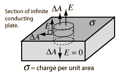
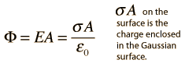
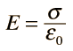

The fact that the conductor is at equilibrium is an important constraint in this problem. It tells us that the field is perpendicular to the surface, because otherwise it would exert a force parallel to the surface and produce charge motion. Likewise it tells us that the field in the interior of the conductor is zero, since otherwise charge would be moving and not at equilibrium.
|
Examining the nature of the electric field near a conducting surface is an important application of Gauss' law. Considering a cylindrical Gaussian surface oriented perpendicular to the surface, it can be seen that the only contribution to the electric flux is through the top of the Gaussian surface. The flux is given by

and the electric field is simply

While strictly true only for an infinite conductor, it tells us the limiting value as we approach any conductor at equilibrium.
|